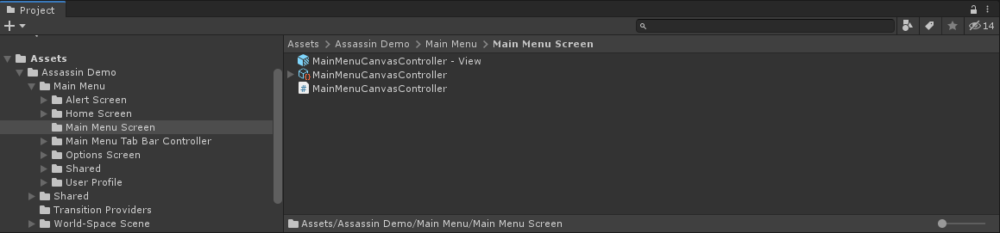
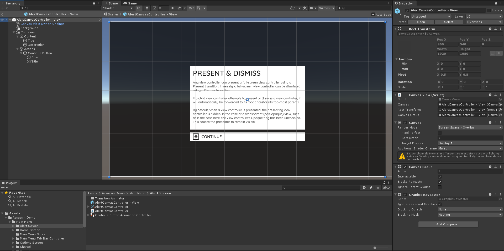
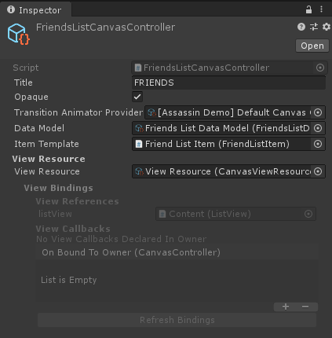
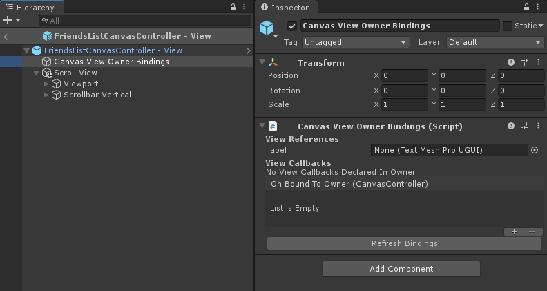
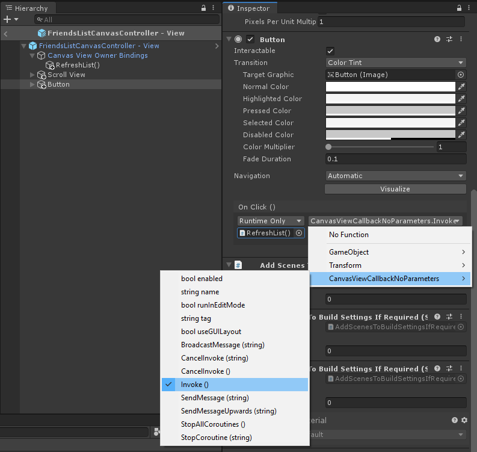

Canvas Controllers
Introduction
A Canvas Controller is a view controller based upon Unity's UI Canvas component. It manages a CanvasView – a view contained in a UI Canvas – and stores this view in a Prefab asset. When working with Unity's UI Canvas system, all view controllers are derived from the CanvasController class.
Creation
To create a new canvas controller, select Create/UI Graph/UI Canvas/Canvas Controller from the menu. Enter a name and a directory for your new canvas controller when prompted.
A canvas controller consists of a script with a corresponding Scriptable Object instance, as well as its Canvas View contained within a Prefab asset. These three assets will now exist at the specified location.
 Canvas Controller asset structure.
Canvas View
A canvas controller manages a CanvasView, which is stored in a Prefab asset named #NameOfCanvasController - View. To edit the canvas controller's view, open the canvas view prefab to enter Prefab Mode.
Your screen's UI content is placed inside this prefab. See below for an example of a simple screen from the Assassin demo.
 The AlertCanvasController from the Assassin demo.
The root game object contains the CanvasView component, as well as Canvas, Canvas Group, and Graphic Raycaster components. The CanvasView, Canvas, and Canvas Group components are required and should not be removed. The Graphic Raycaster may be removed or disabled if no input is required on the view.
The Canvas component has a default Render Mode of Screen Space - Overlay. However, this is not the render mode that will be used at runtime and can be ignored.
Note
When a canvas controller is presented, its view is contained within a parent CanvasWindow, making it a sub-canvas. It is this window that provides the root canvas and as such it is the window's canvas whom will provide the render mode. See the Canvas Window section for more detail.
By default, a Canvas View prefab is a Prefab Variant of the Canvas View (Standard) prefab. The base prefab that UI Graph will use when creating canvas controllers can be changed in the package settings. This allows you to modify the default view of newly created canvas controllers.
Note
The Canvas View Owner Bindings object in the prefab is for View Bindings, which are covered below. UI content shouldn't be added underneath this object.
Scripting
The canvas controller's script file is where you can perform any custom scripting and logic related to your view controller.
The CanvasController class offers various override-able methods that allow you to perform actions when certain view life-cycle events happen.
For example, the ViewDidLoad method can be overridden to perform any additional setup after the view controller has instantiated its view. The Friends List canvas controller in the Assassin Demo overrides the ViewDidLoad method to layout its list of friends.
public class FriendsListCanvasController : CanvasController
{
[ViewReference] public ListView listView;
protected override void ViewDidLoad()
{
base.ViewDidLoad();
listView.DataSource = this;
listView.ReloadData();
}
}
As a canvas controller is a Scriptable Object, any public instance variables will be exposed in the asset's inspector. This can be used to hold references to other assets. For example, the Friends List canvas controller in the Assassin Demo holds a reference to a data model object containing friends.

Note
References to view objects � objects within the canvas view prefab � can be made using a View Reference. Similarly, calling a method on the canvas controller from the view, such as from a UI.Button, can be achieved using a View Callback.
Tip
Attach UI components, scripts, and behaviours to the Game Objects in the prefab, just as you normally would with Unity UI. This helps to keep the canvas controller lightweight and focused upon its primary responsibility of managing its view. When required, use View Bindings to communicate between the canvas controller and the objects in its view.
View Bindings
UI Graph offers a view bindings system for communicating between a canvas controller script and the objects in its view. This allows your canvas controller script to reference components within its view prefab, as well as to call methods declared in your canvas controller script from components in the view. These two systems are called View References and View Callbacks respectively.
When a canvas controller instantiates its view prefab, the view is bound to its owning canvas controller. This binding process binds the view references and callbacks to the canvas controller whom loaded it � its owner. This occurs before the canvas controller's ViewDidLoad method is invoked, making it safe to use view references in ViewDidLoad.
View References
A view reference allows your canvas controller to reference a component within its view using a simple field. This is useful if you want to, for example, configure a component in ViewDidLoad or perhaps restart an animation in ViewDidAppear.
To create a view reference, declare a field on your canvas controller and decorate it with the [ViewReference] attribute.
public class FriendsListCanvasController : CanvasController
{
[ViewReference]
public TextMeshProUGUI label;
protected override void ViewDidLoad()
{
base.ViewDidLoad();
// Set the label's text to the canvas controller's title.
label.text = title;
}
}
This field will now be exposed by the view's Canvas View Owner Bindings component. Open the canvas controller's view prefab and select the Canvas View Owner Bindings game object to see the exposed field in the inspector. The relevant label in your view can now be dragged onto the exposed field, just as all Unity references are made.

This field will now be populated with the value set in the inspector upon instantiation.
View Callbacks
A view callback allows you to invoke a method declared in your canvas controller script from a component in the view. This is used when you want to call a method on your canvas controller from, for example, a button press.
To expose a method in you canvas controller to its view, decorate it with the [ViewCallback] attribute.
public class FriendsListCanvasController : CanvasController
{
[ViewCallback]
public void RefreshList()
{
// ...
}
}
A view callback object for the exposed method will now be added to the view, located underneath the Canvas View Owner Bindings object. Open the canvas controller's view prefab, locate the Canvas View Owner Bindings game object, and view its child objects to see the view callback.
A view callback is invoked by calling its Invoke() method. For example, to invoke the above RefreshList() view callback from a button's On Click event, drag the view callback onto the On Click event's target object and select Invoke() from the CanvasViewCallback� script.
 Invoking A View Callback From A Button
This method will now be invoked when the button is pressed.
On Bound To Owner Event
The Canvas View Owner Bindings component includes an On Bound To Owner event. This event is invoked when the view is bound to its owning canvas controller, as detailed above.
This event can also be used to configure any view components upon load. For example, the following component configures a label's text with the canvas controller's title. The ConfigureWithCanvasController method can be added to the On Bound To Owner event in the inspector and the label will be configured upon load.
public class ApplyCanvasControllerTitleToLabel : MonoBehaviour
{
public TextMeshProUGUI label;
public void ConfigureWithCanvasController(CanvasController canvasController)
{
label.text = canvasController.title;
}
}
Note
The above functionality could have been achieved with a View Reference in the canvas controller to the label. It's a matter of personal preference how you choose to structure your code here. Using this event where appropriate can help to keep the canvas controller lightweight and focused upon its primary responsibility of managing its view (and not all the UI components within it).
Canvas Window
Canvas controllers are presented within a CanvasWindow. A canvas window contains a single user-interface flow. When a canvas controller is presented, its view will be instantiated and added to the window. Inversely, when it is dismissed it will be removed from the window and destroyed. A canvas window exists in the scene you wish to present it in.
Setup
The recommended way to create user-interface flows is using Graphs. To create a new canvas window when using graphs, select Add Graph To Current Scene from the graph's dropdown menu. This will automatically create a new CanvasWindow in the current scene along with a CanvasGraphPresenter configured with the current graph.
However, you may also use the View Controller system directly without using graphs. In this case, you must configure the window yourself. Firstly, create a new canvas window in the current scene by selecting GameObject/UI/Canvas Window (UI Graph) from the menu. To configure the window, create a script to set its root view controller and present it.
using Pelican7.UIGraph;
using UnityEngine;
public class ConfigureWindow : MonoBehaviour
{
// A reference to the window, configured in the inspector.
public CanvasWindow window;
// A reference to the initial canvas controller of our user-interface, configured in the inspector.
public CanvasController mainMenuCanvasController;
private void Awake()
{
// Instantiate the initial canvas controller.
CanvasController rootCanvasController = Instantiate(mainMenuCanvasController);
// Set the window's root view controller to our instantiated canvas controller.
window.RootViewController = rootCanvasController;
// Presenting the window presents its root view controller.
window.Present();
}
}
Here we present the window in the Awake method with no animation. This ensures the view is on-screen immediately. When our mainMenuCanvasController subsequently performs a transition, such as Present, it's view will be instantiated and added to the window.
Note
The template prefab that UI Graph will use when creating a new canvas window can be changed in the package settings.
Configure
All subsequently presented CanvasViews will be embedded within this parent CanvasWindow. As such, their Canvas components will inherit the canvas window's properties. Two particular properties of note here are:
- Render Mode – Changing the render mode of the window's canvas will affect all subsequently presented canvas views. For example, to create a World Space user-interface, change the canvas' Render Mode to World Space and replace the camera with the scene's main camera. See the World-Space Scene from the Assassin Demo for an example of this.
- Canvas Scaler – The default canvas window includes a
Canvas Scalercomponent, which can be used to control your interface's scaling and resizing.
Additionally, the canvas window includes the camera that renders the user-interface, so any camera properties can also be changed here.
Dismissal
A window can be dismissed using its Dismiss method. This will dismiss the window's root view controller (which dismisses all of its presented view controllers) and destroy the window itself upon completion. This can be useful when using multiple windows, such as in a scene transition.
Transition Animation
The recommended way to animate transitions between canvas controllers is to use the Transition Sequence Animator. This allows you to create animation sequences without coding, as well as to script your own animations for use with the system. See the Transition Sequence Animator section for more detail.
Custom Transition Animations
Alternatively, you are not required to use the Transition Sequence Animator system and may script your own transition animations yourself. To do this, you are required to create two components:
- An animator, which will execute the animation.
- An animator provider, which will provide the animator to UI Graph.
You then set your view controller's transitionAnimatorProvider to your animator provider, which will supply your animator to UI Graph when a transition is performed. Separating the responsibilities in this way allows the provider to return different animators depending upon the transition being performed.
To do this, firstly create subclasses of the CanvasControllerTransitionAnimator and CanvasControllerTransitionAnimatorProvider classes. These classes derive from ScriptableObject and implement the required interfaces as abstract override-able methods. Using Scriptable Object assets will allow you to use the Unity Inspector to edit their properties, as well as to easily drop it onto the view controller's transitionAnimatorProvider field (although it is not required).
[CreateAssetMenu]
public class MyAnimator : CanvasControllerTransitionAnimator
{
}
[CreateAssetMenu]
public class MyAnimatorProvider : CanvasControllerTransitionAnimatorProvider
{
}
Note
Including [CreateAssetMenu] allows instances of the animators/provider to be created in the Unity menu.
Next, implement your transition animation in the animator class. For example, a simple scale animation could look something like this:
[CreateAssetMenu]
public class MyAnimator : CanvasControllerTransitionAnimator
{
public float duration;
public ViewControllerTransitionTimeUpdateMode updateMode;
private Transform targetTransform;
public override float TransitionDuration(CanvasControllerTransitionContext context)
{
// Return duration set in the inspector.
return duration;
}
public override ViewControllerTransitionTimeUpdateMode TransitionTimeUpdateMode(CanvasControllerTransitionContext context)
{
// Return update mode set in the inspector.
return updateMode;
}
public override void ConfigureTransitionAnimation(CanvasControllerTransitionContext context)
{
// Configure your animation.
// Set our target transform as the ToViewController's view.
targetTransform = context.ToViewController.View.transform;
}
public override void UpdateTransitionAnimation(CanvasControllerTransitionContext context, float progress01)
{
// Perform your animation with progress01.
// Scale from zero to one.
targetTransform.localScale = Vector3.LerpUnclamped(Vector3.zero, Vector3.one, progress01);
}
public override void OnTransitionFinished(CanvasControllerTransitionContext context, bool completed)
{
base.OnTransitionFinished(context, completed);
// An opportunity to do any clean up necessary. For example:
// - Destroy any views instantiated by the animator.
// - Reset any state changed by the animator if completed == false.
// etc.
}
}
Now we want to provide this animator in our transition provider.
[CreateAssetMenu]
public class MyAnimatorProvider : CanvasControllerTransitionAnimatorProvider
{
public CanvasControllerTransitionAnimator animator;
public override IViewControllerTransitionAnimator<CanvasControllerTransitionContext> AnimatorForTransition(CanvasControllerTransitionContext context)
{
return animator;
}
}
Finally, create an instance of each using the Unity Create menu, configure their properties, and drop the provider onto the relevant view controller's transitionAnimatorProvider field. When this view controller performs a transition, it will now use the custom provider and animator.
Note
When a view controller is presented, it is the presented view controller that provides the animator. Similarly, when a view controller is dismissed it is the view controller being dismissed which provides the animator. For containment transitions, animators are provided by the view controller performing the transition – the container itself.